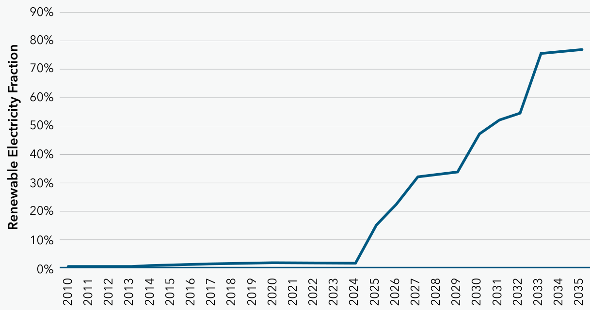
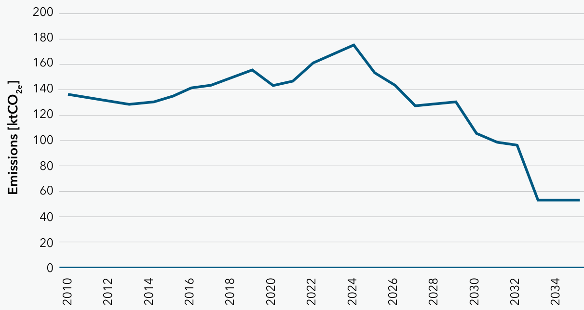

October 2025
Grenada’s Third Nationally Determined Contribution (NDC 3.0) comes at a defining moment for our nation and for the world. The climate crisis is no longer an environmental issue it is the single greatest development challenge of our generation, shaping the future of our economy, our security, and our very identity as a people.
In 2024, Hurricane Beryl struck our islands with a ferocity that will remain etched in our national memory. The destruction of homes, schools, crops, and livelihoods across Carriacou and Petite Martinique was not merely a natural disaster it was a clear signal of the global injustice that Small Island Developing States continue to face. Grenada’s contribution to global greenhouse gas emissions is negligible less than one-thousandth of one percent yet we stand on the frontline of the worsening climate crisis, bearing consequences we did not create. Still, we rise.
This NDC 3.0 is Grenada’s statement of sovereignty and resolve in the face of this crisis. It affirms that our future will not be defined by vulnerability, but by vision, innovation, and courage. We are choosing transformation -building a modern, low-emission economy powered by clean energy, resilient infrastructure, and empowered citizens.
We are already acting: expanding solar and geothermal power, electrifying transport, improving energy efficiency, and protecting our forests and oceans. These efforts will make us less dependent on imported fuels, more competitive, and better prepared for the shocks that climate change will continue to bring. At the same time, we are rebuilding stronger with Carriacou and Petite Martinique on track to become the region’s first 100 percent renewable and climate-resilient islands.
But ambition alone cannot carry us across the finish line. True global partnership is required. The cost of our transition, over two billion U.S. dollars in mitigation and adaptation investments is far beyond the fiscal capacity of a small island state. What we ask is not charity, but fairness: that those who have benefited most from industrial growth stand with those now paying the price. Access to concessional finance, technology, and capacity support is not an act of generosity; it is partnership, a moral imperative and a matter of climate justice.
To our people, I say this: every Grenadian has a role to play. Climate action begins at home in how we use energy, manage our land, protect our coastlines, and support one another after every storm. To our young people, who will inherit the outcomes of the choices we make today, I say: your ideas, your innovation, and your insistence on accountability are essential to the Grenada we are building.
This NDC 3.0 reflects the best of who we are, resilient, forward-looking, and possessed of the courage to lead. It is a promise that we will not simply survive the climate crisis; we will redefine what small islands can achieve through unity, discipline, and faith in ourselves.
Let us continue, together, to build a nation that stands as a beacon of strength and possibility. A Grenada that is greener, fairer, and stronger than ever before.
Hon. Dickon Mitchell
Prime Minister of Grenada, Carriacou and Petite Martinique
Grenada’s Third Nationally Determined Contribution (NDC 3.0) is presented at a decisive moment for the Paris Agreement and for all Small Island Developing States. The first Global Stocktake confirmed what science and lived reality already tell us: to keep 1.5°C within reach, the world must deliver deep, rapid, and sustained emission cuts, while scaling resilience and addressing loss and damage with urgency and fairness. Grenada intends to do its part— and to help steer the global conversation toward what actually works for vulnerable economies.
Under my leadership as Minister for Climate Resiliencer, the Environment and Renewable Energy, the Government of Grenada is advancing a clear, coherent pathway: an economy-wide target to reduce greenhouse-gas emissions 40% below 2010 levels by 2035, conditional on international support; a just energy transition that lowers costs, strengthens security, and creates decent work; and an adaptation agenda that protects lives, livelihoods, and ecosystems across Grenada, Carriacou, and Petite Martinique. This is not a symbolic pledge. It is a whole-of-government, whole-of-society program aligned with the outcomes of the Global Stocktake— tripling renewables, doubling energy efficiency, accelerating sustainable transport, modernizing cooling, improving waste management, and unlocking nature-based solutions—sequenced to the realities of our grid, our markets, and our fiscal space.
The case for ambition is not abstract. In 2024, Hurricane Beryl devastated our sister islands, exposing again the asymmetry of climate risk: countries that contributed the least to this crisis bear the heaviest costs—in infrastructure, education, health, and culture. We therefore approach NDC 3.0 with both moral clarity and pragmatic discipline. Moral clarity, because the principles of equity and common but differentiated responsibilities must guide international cooperation—including the urgent capitalization and operational delivery of loss-and-damage finance, concessional resilience lending, and technology transfer. Pragmatic discipline, because every action we adopt must be technically sound, fiscally responsible, and resilient to a warming ocean and stronger storms.
Our mitigation pathway prioritizes the highest-impact sectors first. We will decisively expand renewable electricity and storage, strengthen efficiency standards for buildings and appliances, accelerate the shift to electric and hybrid mobility alongside smart charging and resilient distribution, and modernize waste management to cut methane emissions through diversion, recovery, and flaring. In parallel, we will continue transitional measures in hard-to-abate segments, manage short-lived climate pollutants in line with the Kigali Amendment, and build the regulatory capacity needed for fair, competitive power markets and investor confidence. These are concrete reforms that reduce volatility from imported fuels, lower bills over time, and improve our competitiveness.
Adaptation is an equal pillar. Grenada’s updated National Adaptation Plan sets out climate-smart agriculture, water security, coastal protection, disaster-ready health and education systems, resilient public buildings and roads, and the restoration of forests, mangroves, and seagrass as blue-green infrastructure. We will embed risk information in planning, procurement, and maintenance cycles; expand early-warning systems and shelter standards; and mainstream gender, youth, and disability inclusion across implementation. The benefits are immediate: fewer disruptions, safer communities, stronger local economies.
NDC 3.0 is also a diplomatic instrument. It signals what credible ambition looks like for a SIDS while calling for a global response commensurate with science and law. Major emitters must align near-term targets with 1.5°C-consistent trajectories; financial institutions must offer terms that reflect climate vulnerability and small-economy scale; and international mechanisms must move from promise to performance rapidly, transparently, and at the volumes required. By framing our partnerships as mutual opportunities for innovation and shared resilience, Grenada offers a model where the challenges confronted by small island states inform solutions that can benefit larger nations. Through cooperative approaches, such as regional solutions in the Eastern Caribbean, we can achieve scale and resilience together, illustrating a path toward victory that is shared and reciprocated.
Finally, this NDC is a social contract. It commits my Government to transparent monitoring, clear milestones, and honest course-correction when evidence demands it. It commits our partners to timely, accessible support that unlocks transformative investment rather than incremental projects. And it commits all of us—public sector, private sector, communities, and diaspora—to a just transition that is fair in opportunity and firm in resolve.
We are a small nation with a large stake in the world’s success. NDC 3.0 is Grenada’s contribution to a safer climate, a stronger economy, and a more dignified future—proof that resilience and prosperity can advance together when ambition is matched by action.
Hon. Kerryne Z. James
Minister of Climate Resilience, the Environment and Renewable Energy
Grenada’s third Nationally Determined Contribution (NDC 3.0) is submitted pursuant to Article 4, paragraph 2 of the Paris Agreement and in response to the outcomes of the first Global Stocktake (GST). This submission covers the time period of 2030-2035 and represents Grenada’s continued commitment to the objectives laid out in Article 2 of the Paris Agreement towards holding the increase of the global average temperature to well below 2°C above pre-industrial levels while pursuing efforts to limit the increase to 1.5°C.
This NDC 3.0 is grounded in Grenada’s National Climate Change Policy (NCCP), which outlines Grenada’s holistic approach to tackling the climate crisis, as well as sector policies like the National Energy Policy (NEP) laying the groundwork for sector decarbonisation. The NCCP identifies mitigation as a central pillar of Grenada’s climate response and highlights the complementary roles of the NDC and the National Adaptation Plan (NAP) as key instruments for implementing the national climate policy across priority sectors, over both the medium and long term.
In alignment with the guidance provided under the Enhanced Transparency Framework and to further operationalise the climate change policy, Grenada is in the early stages of developing a comprehensive Low Emissions Development Strategy and Action Plan (LEDS-SA). The LEDS-SA will serve as a roadmap for the long-term transformation of Grenada’s economy, support sector-specific mitigation planning, and establish a Monitoring, Reporting, and Verification (MRV) system consistent with international best practices. The development of the LEDS-SA reflects Grenada’s commitment to achieving net-zero emissions and will strengthen the enabling environment for low-emission investments and implementation of this NDC.
The emissions reduction target in the NDC 3.0 reaffirms the NDC 2.0 commitment of reducing economy-wide greenhouse gas emissions by 40% below 2010 levels by 2030, conditional upon international support. The 2035 NDC 3.0 target is to maintain or deepen this reduction level, also conditional upon international support. While the absolute target level has not changed from 2030 to 2035, this updated NDC represents Grenada’s highest possible ambition in line with national circumstances, technical capacity, and available resources. These reductions will be achieved through interventions in the Energy (electricity generation, transport and direct end-use consumption), Waste, Agriculture and Forestry, and Industrial Processes and Product Use (IPPU) sectors, while leveraging the mitigation co-benefits of adaptation and resilience actions.
In line with the findings and outcomes of the first GST (Decision 1/CMA.5), all Parties are called to contribute to global mitigation efforts to achieve deep, rapid, and sustained reductions in greenhouse gas emissions in line with 1.5°C pathways. These include reducing GHG emissions by 43% relative to 2019 levels by 2030, tripling renewable energy, doubling energy efficiency by 2030, reducing global emissions by 60% relative to 2019 by 2035, and reaching net zero carbon dioxide emissions by 2050. For Grenada, fully implementing the NDC 2.0 target would result in more than a tripling of national renewable energy capacity and significantly improving energy efficiency.
The following sections provide a brief overview of progress toward implementation of the NDC 2.0 emissions reduction goals for 2030 and, with this new NDC 3.0, for 2035. The state of national emissions has been assessed using the most recent information available, providing a robust basis for current targets and measures.
This includes an update of base year GHG emissions in 2010 to now include all sectors except the carbon sink in natural forests, while NDC 2.0 only provided energy sector emissions in the base year. However, data gaps in various sectoral activities remain, which constrain opportunities for further enhancement. An updated Biennial Transparency Report (BTR), currently under development, is expected to provide supplementary data and analysis to help address these gaps and better inform the implementation of this NDC 3.0.
Greenhouse gas emissions from Grenada’s energy sector comes primarily from three main sources: generation of electricity, transportation, and end-use consumption by households, commercial entities and agricultural or industrial enterprises (i.e. all other energy use excluding electricity generation and transport, such as cooking).
Under both NDC 2.0 and NDC 3.0, the main focus is on reducing emissions in the IPCC energy sector, which remains heavily reliant on fossil fuels, primarily imported diesel fuel and gasoline. Reducing emissions from fossil fuel combustion, particularly through the transition to renewable energy sources and enhancing energy efficiency remains central to Grenada’s NDC target. In addition to emissions reductions, this transition is expected to deliver multiple co-benefits, including improved energy security, reduced vulnerability to global oil price volatility, and lower electricity and energy costs - factors that currently constrain economic competitiveness and disproportionately impact low-income households.
Electricity generation in Grenada is dominated by diesel fuel, however, solar photovoltaic (PV) capacity has been steadily increasing. By end of 2024, approximately 6.2 MW of capacity was operational, with active plans for significant further expansion. Several additional sources of renewable energy are under active consideration as well, including wind, wave and geothermal power.
Progress includes the 2021 launch of a request for proposals (RFP) for independent power producers (IPPs), which resulted in nine IPPs totalling 850 kW of capacity. In 2025, a combined total of 5 MW is being sought in a similar call. The Caribbean Efficient and Green Energy Building Project (CEGEB) supported by the World Bank will be implemented from 2025 onwards. This program is expected to add an estimated capacity of over 8 MW rooftop solar PV and deploy battery energy storage systems (BESS) with a capacity of 10.6 MW/21.2 MWh, enhancing system reliability and integrating more renewable energy into the grid.
In May 2025, the Public Utilities Regulatory Commission (PURC) announced a partnership with the Rocky Mountain Institute (RMI) to competitively procure an Independent Power Producer (IPP) to build, own, and operate 15.1 MW of solar PV generation in three locations around the Maurice Bishop International Airport. This initiative is complemented by the PURC’s Small-Scale Independent Power Producer program, which targets local investment in the renewable energy industry. Generating facilities under the SSIP program range from 30kW to 200kW.
The PURC’s Self-Generator Program has enabled residential and commercial users to generate electricity for their own use. Under the program, residential and commercial users are permitted to install a maximum of 120% and 60% of their nominal daily electricity demand, respectively, through self-generated renewable energy. The initiative leverages financial and regulatory instruments to incentivise renewable energy uptake and further decarbonise the national energy mix. The regulatory framework and incentive mechanisms of the Self-Generator Program are currently under review, and will result in the updating of metrics and targets for the initiative.
Geothermal energy is also a key component of the drive toward reducing emissions in the electricity sector. Significant progress has already been made toward project development, with drilling of exploration wells currently being planned. If the geothermal resource is proven viable and financing is secured, a 15 MW geothermal power plant could be operation within the next decade. This would represent a significant step in Grenada’s energy transition and emission reduction strategy.
Additional renewable energy projects have been identified and are currently under conceptual development: two 1 MW projects for floating solar on irrigation ponds, and 2 MW wave-power project. Preliminary assessments indicates that both offshore and onshore wind power hold considerable potential for Grenada’s renewable energy transition. Wind energy is currently being explored in two scenarios of the Integrated Resource and Resilience Plan (IRRP) and the IRRP is nearing finalisation. The preliminary data is promising, however, logistical challenges and concerns regarding the resilience of wind infrastructure to hurricanes require further analysis. As such, wind energy remains under consideration as long-term mitigation option with the potential to make a significant contribution to Grenada’s decarbonisation pathway.
The various renewable energy projects being implemented and planned shows a strong commitment to achieving the emissions reduction targets outlined in NDC 2.0 and reinforced in NDC 3.0. Fig. 1 illustrates the change in renewable electricity share over the NDC commitment period, and Fig. 2 shows the anticipated reduction in emissions from the electricity sector, given the NDC 3.0 pathway.


Since the adoption of NDC 2.0, Grenada has introduced several policies to encourage uptake of renewable energy and energy efficiency practices, including a full waiver of duties and taxes, with only a 6% customs tax applied to imports. In 2025, a new IRRP for the electricity sector is under development. The recent increase in renewable energy activity and the implementation of new energy sector policies have been supported by the operationalisation and oversight of the PURC. The PURC plays a key role in setting electricity rates, approving power purchase agreements, and regulating grid access. Strengthening the PURC capacity is an essential part of the Government’s long-term vision for a modern and decarbonised electricity sector.
Following the devastation caused by Hurricane Beryl in 2024, the Government is pursuing a 100% renewable electricity target for the sister islands Carriacou and Petite Martinique. At present, the grid is being upgraded to accommodate additional solar PV, with 400 kW battery storage currently planned. More resilient infrastructure is also being built, including the reconstruction of an approximately 800 kWp solar PV plant in Carriacou that was damaged during the hurricane.
In parallel, increasing energy efficiency, identified as one of the outcomes of the Global Stocktake is also under active consideration. Feasibility studies have been completed for a Seawater Air-Conditioning (SWAC) project that will supply public institutions with energy efficient cooling through retrofitting and replacement. This project will facilitate cooling at four sites, including the university, airport, and two resorts. The 2025 NDC Cooling Roadmap also has a major focus on enhancing Minimum Energy Performance Standards (MEPS) for appliance use and building codes. The efficiency interventions in the Roadmap are targeted to reduce electricity consumption by households and commercial buildings to reduce by 72% and 81% respectively relative to 2017 levels. The CEGEB project also has a large component dedicated to increasing energy efficiency of public buildings. Furthermore, an import ban will come into effect on less energy efficient categories of refrigeration and air conditioning equipment.
In 2021, road transportation accounted for approximately 34% of Grenada’s energy emissions with marine transport contributing an additional 4%. Vehicle sales have increased significantly faster than projected in the first NDC, with the number of registered vehicles in 2024 standing 91% higher than in 2015.As a result, emissions reduction measures previously proposed for the transport sector, including gasoline taxes, biofuel blends, and fuel efficiency standards, proved insufficient to achieve the targeted 20% reduction by 2025.
In contrast to the measures considered a decade ago, the much more promising route to decarbonisation of the road transport sector now lies in the increasing adoption of electric and hybrid vehicles in both public and private vehicle fleets. When coupled with increasing renewable electricity generation, this shift offers a pragmatic route toward achieving the Grenada goal of contributing to achieving the Paris Agreement target of net-zero CO2 emissions by mid-century. The uptake of electric vehicles (EVs) has grown rapidly, from 5 in 2020 to 95 EVs in 2024. Hybrid vehicle registrations, though offering smaller per-vehicle emissions reductions, have expanded even more rapidly. Based on trends in 2025 to date, EVs and hybrid vehicles are expected to comprise over 50% of total annual vehicle imports. This growth demonstrates positive momentum in the transport sector, signalling a progressive shift towards cleaner options.
Unlike the electricity sector, which can achieve relatively swift emissions reductions through the substitution of diesel generation with renewable energy, the transport sector has structural inertia. The full impact of EV adoption depends on the gradual fleet turnover, meaning that a rapid increase in the annual shares of EV sales is critical to achieving long-term emission reductions. The Grenada Transport Commission is currently developing a Sustainable Transport Policy Framework to guide this transition.
Several policy measures to support emissions reductions in transport are already in place or under active consideration. Current incentives include 100% duty concessions EVs, 75% for hybrids less than five years old, and 50% for hybrids between 5-10 years old. These concessions may be further adjusted aimed at more clearly prioritising EV imports over hybrids to accelerate emissions reductions.
Grenada is also taking steps to mitigate emissions from domestic maritime transport. Despite maritime transport accounting for only 4% of total national energy emissions in 2021, it is vital for mobility, trade, and blue economic interventions. Ferries and port infrastructure also serve a crucial role in post-disaster responses, underscoring their cross-cutting importance to climate mitigation and adaptation efforts. To advance decarbonisation in this sector, Grenada is working to align maritime operations with the International Maritime Organisation’s (IMO) Revised GHG Strategy adopted in 2023. Proposed Interventions include developing of a National Maritime GHG Emissions Action Plan, establishing monitoring, reporting, and verification (MRV) standards for tracking marine fuel usage, and exploring Grenada’s participation in regional green shipping corridors. The successful and sustained integration of these interventions into future NDC updates and long-term strategies is contingent upon Grenada receiving requisite technical and financial support.
Emissions from waste sector, including solid waste and wastewater, were estimated at 57.8 GgCO2eq. in 2010, and without mitigation measures, are projected to grow to 97 GgCO2eq. and 105 GgCO2eq. by 2030 and 2035, respectively. Nearly all of the increase is projected to come from the solid waste sector, increasing from 30 GgCO2eq. to 75 GgCO2eq. in a business-as-usual (BAU) scenario.
Mitigation in the waste sector involves two distinct actions targeting solid waste. The first is the commissioning of a new landfill with full methane flaring in 2030, after which the existing landfills will be closed and efforts made to capture 70% of methane produced by the new landfill. The second action is the diversion of 40% of organic waste to composting by 2030 to reduce the amount of waste deposited in the landfill.
Implementation of these measures is already underway. In 2025, the Grenada Solid Waste Management Authority (GSWMA) signed a memorandum of understanding (MoU) for the possible development of an industrial eco-village that seeks to reduce waste through innovative recycling and waste-diversion technologies, including a waste-to-energy facility. Additionally, through the European Union’s Global Gateway initiative and collaboration with the private sector, Grenada is piloting solutions for the sustainable management of invasive sargassum. This includes offshore sargassum management infrastructure, a waste-to-energy biogas facility using sargassum as a fuel, and the exploration of sargassum use in creating bioplastics and fertilisers.
Agriculture has historically contributed only a small share to Grenada’s overall national emissions and has remained relatively stable over the years. In 2021, the sector accounted for approximately 2.6 GgCO2eq., around 43 times less than the transport sector emissions, which were estimated at 112.594 GgCO2eq. in the same year. Livestock has been the largest source of agricultural emissions, however the total number of livestock in Grenada declined by 45.5% between 2012 and 2023, leading to a concurrent reduction in sectoral emissions.
In the absence of substantial growth in agricultural output or major shifts in production methods, emissions from the sector are expected to remain close to current levels in the near term. Grenada requires further technical and financial support to strengthen the understanding of the sector’s emissions profile and to identify potential mitigation opportunities for agricultural activities, particularly in fishing and export crop production.
Under this NDC 3.0, mitigation potential in the agriculture sector will be realised primarily through the intensification of agroforestry and apiculture systems, the adoption of climate-smart agricultural practices, improved management of fertiliser and pesticide use, and the establishments of systems for data collection and tracking of agricultural GHG emissions. This includes the potential monitoring of nitrous oxide (N2O) emissions from the agriculture and waste sectors.
The Land Use, Land Use Change, and Forestry (LULUCF) sector currently represents Grenada’s largest carbon sink. Forests represent a significant share of land cover in Grenada, with 23% of the main island being classified as forested land
Over the past three decades, overall forest cover in Grenada has remained constant but carbon stocks are increasingly threatened by multiple factors, including forest fires, invasive bamboo species, and extreme weather events. Hurricanes Ivan and Emily caused severe damage to the forests stock, while the extent of forested areas remained fairly constant outside some limited impact of housing projects.1 Similarly, Hurricane Beryl caused significant damage to forests across Grenada in the form of uprooted, defoliated, and broken trees2, although the impact on the total forest cover has yet to be qualified.
Similar to the agriculture sector, further technical and financial support is required to enhance understanding of the LULUCF emissions profile and its mitigation potential. Priority needs include updated assessments of forest cover, charcoal production, and the carbon sequestration capacity of sea grass beds.
Nonetheless Grenada is already implementing measures for carbon sequestration in the forestry sector. The National Forest Policy (2012-2028) and its Implementation Strategy have integrated several mitigation actions, including managing forest ecosystems to prevent wildfires, implementing afforestation and reforestation programmes, and enhancing the monitoring and prevention of deforestation.3, 4 Key initiatives include the SOILCARE Project, under which Grenada aims to enhance sustainable soil and land management through the replacement of invasive tree species with native forest cover. Reforestation and conservation of protected areas, including mangroves, will also be encouraged in accordance with the National Physical Development Plan of Grenada and in line with Grenada’s National Sustainable Development Plan 2020-2035. Ongoing restoration efforts in Carriacou following Hurricane Beryl underscore the mitigation co-benefit potential of interventions in the forestry sector. Grenada also aims to establish a Blue Carbon Facility to advance the conservation and sustainable management of blue carbon ecosystems, such as mangroves and seagrass beds, further enhancing the LULUCF sector’s contribution to national climate goals.
Manufacturing and industrial activities contribute a relatively marginal amount of Grenada’s total national emissions, estimated at 58.3 GgCO2eq. in 2014 and projected to reach to 60 GgCO2eq. by 2030. Almost all of non-energy emissions from the sector are derived from hydrofluorocarbons (HFCs) used in refrigeration and air conditioning (RAC) systems (58.18 GgCO2eq.), alongside a small contribution of SF6 emissions (0.14 GgCO2eq.). In the absence of significant growth in industrial outputs or major changes in sectoral production methods, emissions from the Industrial Processes and Product Use (IPPU) sector are expected to remain relatively similar to current levels until 2035.
While further technical and financial support is required to quantify the mitigation potential and targets of the IPPU sector, Grenada has already taken steps to reduce industrial emissions, with a strong focus on managing and reducing HFC consumption in cooling systems. Grenada offers a range of incentives and regulations to phase out F-gases and promote cleaner cooling technologies, including fiscal exemptions. As part of the Life-cycle Refrigerant Management (LRM) programme, the National Ozone Unit has delivered training on the safe extraction, cleaning, and recycling of refrigerants from air-conditioning and refrigeration equipment. A dedicated, recovery, recycling, and reclamation facility is now operational at the Grenada Solid Waste Management Authority (GSWMA), providing life-cycle management and end-of-life treatment support for refrigerants.
Similarly, a revised National Cooling Action Plan is currently being developed based on the 2021 National Cooling Strategy. These have all been consolidated into the 2025 NDC Cooling Roadmap, which details the objectives, stakeholder roles, and financing needs for emissions reductions in cooling infrastructure, which has been identified as a key mitigation priority. In addition, the introduction of efficiency and technology standards, as well as end-of-life handling for air conditioners is currently being considered. Lastly, an updated GHG inventory for the RAC Sector is also in the final stages of development providing essential data to inform target-setting and interventions.
Grenada is also committed to an accelerated phase-down of HFCs and managed transition to natural refrigerants in alignment with the Kigali Amendment to the Montreal Protocol. As is detailed in the Kigali HFC Implementation Plan (KIP) and the NDC Cooling Roadmap, the Government of Grenada aims to achieve a 10% reduction in HFC importation by 2029, and another 20% reduction by 2035 (relative to current baselines), entirely phase out HCFC importation by 2030, and is undertaking various legislative, policy, and project interventions to that effect.
Grenada’s approach to climate action is integral to the NCCP providing overarching framework for both mitigation and adaptation. The NCCP recognises that, as a SIDS, Grenada faces heightened vulnerability to climate change impacts and requires a coordinated cross-sectoral response. In line to this, the NDC and the NAP function as complementary instruments. The NDC articulates Grenada’s mitigation commitments, while the NAP outlines the country’s strategic adaptation priorities as part of its comprehensive climate change response.
Grenada is highly vulnerable to the adverse impacts of climate change. A multitude of climatic events pose risks to the Grenadian population and economy. These include tropical storms, hurricanes, coastal and inland flooding, and drought, as well as sustained increases in sea level and average temperatures. The country’s reliance on a limited number of climate-sensitive sectors, particularly agriculture and tourism, further compounds its vulnerability. Climate change adaptation and resilience-building are therefore key priorities for the Government of Grenada.
Nationwide consultations conducted across Grenada, Carriacou, and Petite Martinique, identified six key adaptation priorities. This includes environmental degradation, water resource management, sustainable agricultural practices, pollution and waste management, community engagement and education, and the inclusion of marginalised groups in environmental planning and decision-making processes.
To respond to these priorities, the updated NAP identifies and prioritises 14 multi-sectoral programmes of action (POAs) for the 2025-2030 period. The total estimated budget for the adaptation responses identified in the updated NAP is USD 591 million. Each POA has a series of corresponding interventions with indicative costs, responsible actors, and timelines for achievement. Alongside the NDC targets, these priority actions are guided by and aligned with the vision and objectives of the NCCP. The updated NAP is also harmonised with other legislation and policy frameworks, including the National Sustainable Development Policy and Action Plan, the National Biodiversity Strategy and Action Plan (NBSAP), and a range of sector-specific policies.
At the institutional level, Grenada seeks to strengthen the coordination and implementation of adaptation by establishing clear mandates for inter-sectoral collaboration. This includes reinforcing the role of the NCCC and formally establishing focal points in key Ministries and Agencies through the Climate Change Focal Point Network (CCFPN). Concurrently, Grenada is undertaking efforts to systematically integrate climate change into national development processes, including planning, budgeting, and environmental assessments. The mainstreaming of gender considerations across institutional arrangements for adaptation is also identified as a key objective.
Water availability is a central priority, as Grenada faces a persistent mismatch between water supply and demand, particularly in the dry season, while climate change projected to exacerbate drought conditions and degrade water quality through increased turbidity and saltwater intrusion. In response, planned measures include establishing a climate-responsive water governance structure, promoting the uptake of water conservation technologies across key sectors, and enhancing the management of watersheds and water supply infrastructure.
Food security and the agriculture sector are vital to Grenada’s economy and are a source of livelihood for many in the country. Grenada is already suffering significant impacts on its agricultural economy, most acutely from hurricanes damaging nutmeg and cacao production, as well as impacting marine ecosystems and fishing infrastructure. These challenges highlight the dual importance of mitigation and adaptation measures in safeguarding Grenada’s agricultural economy. The nutmeg industry alone supported approximately 30% of the island’s population in 2020.5 Agroforestry, crop and livestock farming, and fisheries are all threatened by extreme climate variability, including rising water temperatures, droughts, and torrential rainfall events. Grenada aims to build sectoral resilience by enhancing the availability and understanding of climate vulnerability and risk information, training and incentivising farmers to adopt climate-smart agricultural and fisheries practices, mobilising financing for initiatives to enhance food and nutrition security. In addition to the NAP, the 2015-2030 National Agricultural Plan prioritises a range of actions in climate-smart agriculture with mitigation co-benefits, such as the intensification of agroforestry systems, improved management of fertiliser and pesticide use, and data collection and tracking systems for agricultural GHG emissions.
Parallel to this, ecosystem resilience and integrated coastal zone management are priorities to safeguard critical natural assets and protect coastal communities from storm surges and sea level rise. Grenada aims to protect and manage 25% of all marine, coastal, and terrestrial ecosystems by 2030. This will be purposed by enacting regulatory instruments, collecting data, and raising awareness about the importance of ecosystem resilience and identified ecosystem-based adaptation measures, including those relevant to coastal structures. Simultaneously, the establishment of a Coastal Zone Management Unit, coastal zone plan, and coral restoration initiatives in Carriacou are planned. These adaptation interventions are aimed at promoting ecosystem health, enhancing water recharge and retention, and conserving biodiversity.
While not a distinct POA itself, forestry and land use considerations are integrated into other POAs relevant to ecosystem resilience, food security, and water management. Grenada intends to build sectoral resilience while increasing carbon sequestration by expanding and accelerating participatory reforestation and afforestation initiatives, with a particular focus on the mangrove populations damaged during Hurricane Beryl. Additional measures include enhancing monitoring, mapping, and vulnerability assessments of various forest ecosystems, while promoting sustainable agroforestry practices and livelihood opportunities for local communities.
Disaster risk reduction and climate mobility are also prioritised. Grenada further aims to strengthen disaster risk reduction capacities by enhancing emergency shelter infrastructure, and early warning systems to ensure that national stakeholders across sectors can respond to climate change impacts. In addition, the updated NAP prioritises the achievement of nationwide climate mobility readiness by developing institutional and policy frameworks, data collection and dissemination, and resilient infrastructure and services to support displaced populations.
Additional priority areas include building the resilience of physical infrastructure, including roads, drainage systems, and buildings, through improved planning, design, enforcement, and land use management. Recently, the adoption and implementation of the CARICOM Regional Energy Efficiency Building Code (CREEBC) is a notable step in institutionalising climate-resilient infrastructure. Additional measures will further enhance public awareness of climate impacts and employment opportunities, establish a comprehensive data collection and management system for adaptation-relevant information, and secure sustained financing for adaptation.
Grenada further aims to improve capacities for climate-resilient health systems at the national and district levels. Planned interventions have been articulated through eight priority objectives in the Grenada Health National Adaptation Plan (GHNAP) developed in 2023. The mainstreaming of climate adaptation considerations into health-specific governance, legislation, and personnel training is a common theme in the GHNAP. The upgrading and climate-proofing of health infrastructure and equipment is also emphasised, alongside strengthening nationwide health information and surveillance systems. To ensure that health needs of vulnerable populations are addressed during climate change impacts, the GHNAP also prioritises developing risk reduction plans for identified vulnerable communities, as well as broader stakeholder sensitisation efforts.
Lastly, these objectives and interventions will be tracked through the development of a gender-sensitive monitoring and evaluation system that is fully aligned with the NAP.
Despite the mitigation and adaptation efforts across key sectors, Grenada remains highly vulnerable to the adverse impacts of climate change, including both sudden-onset events and slow-onset processes that result in unavoidable loss and damage. These risks span across the economy and society, impacting lives, livelihoods, and ecosystems.
Grenada has an extensive history in grappling with the consequences of climate-induced disasters. Hurricane Ivan alone reportedly caused losses and damages that were equivalent to USD 898 million, approximately twice the national Gross Domestic Product (GDP) in 2003,6 and took several years to recover from. More recently, Hurricane Beryl in 2024 is estimated to have caused total economic damages equivalent to USD 218 million, equivalent to 16.5% of the 2023 national GDP.7 Physical assets across sectors were damaged, including residential and non-residential buildings, vital infrastructure, particularly for health, water, transport, electricity, and tourism, and agricultural products and resources. Cultural losses and damages were also experienced in the form of destruction in the Carriacou Museum and other historical sites. Beyond these economic impacts, Grenada is also confronted with other non-economic losses, such as the loss and damage to sacred burial sites, and the relocation of youth, both internally and abroad, to continue studies that were interrupted by the devastation of Hurricane Beryl.8
In addition to extreme events, Grenada continues to face slow-onset challenges such as coral reef bleaching, sea level rise (SLR), and saltwater intrusion into freshwater resources. SLR poses a particular threat to coastal infrastructure and livelihoods. Vulnerability assessments carried out under the Caribbean Planning for Adaptation to Climate Change (CPACC) programme and other national and regional studies, have highlighted the risks of SLR on critical assets including beaches, the airport, and the St. George’s waterfront. Projections indicate that such risks will intensify increasing exposure to coastal erosion, flooding, and permanent inundation, with implications for tourism, fisheries, housing, and national heritage. Grenada will continue to integrate this growing body of evidence into planning and implementation processes, as part of a robust and responsive national climate strategy.
The impacts of loss and damage are not distributed equally. The consequences of global emissions continue to fall disproportionately on countries that have contributed the least to the climate crisis, including Grenada, and the effects of anthropogenic climate change are already causing widespread devastation in the most vulnerable countries. This injustice highlights the urgent need for equity and justice to guide the international climate response, and reinforces the need for scaled-up finance and support for loss and damage.
Grenada is committed to actively engaging in global dialogues on loss and damage under the United Nations Framework Convention on Climate Change (UNFCCC) and taking part in international loss and damage mechanisms to streamline climate finance for these ambitious efforts. In particular, Grenada encourages all Parties to deepen engagement with the Fund for Responding to Loss and Damage (FRLD) in order to move from technical operationalisation to resource mobilisation. The FRLD is a crucial avenue to access loss and damage finance in the climate finance landscape, and could be one such potential resource to support Grenada’s loss and damage response. Technical support in addressing the irreversible impacts of climate change is also necessary to adequately prepare for further losses and damages experienced.
The Sustainable Development Goals (SDGs) provide a global framework for addressing interconnected social, economic, and environmental challenges. In the context of Grenada’s NDC, aligning national climate action with the SDGs will ensure that mitigation and adaptation efforts also deliver broader co-benefits, such as improved health and well-being, increased and more efficient energy access, enhanced food security, and more sustainable ecosystem resilience.
Grenada will actively consider the synergies from diverse mitigation and adaptation efforts, recognising that investments in renewable energy, coastal protection, and resilient infrastructure can simultaneously advance goals like affordable clean energy (SDG 7), sustainable communities (SDG 11), and life below water (SDG 14). By integrating SDG co-benefits into its climate planning, Grenada will aim to maximise the social and developmental impact of its NDC while supporting a just and sustainable transition.
Climate impacts are not felt equally and ensuring that adaptation and mitigation strategies account for the differentiated needs and capacities of different groups is essential to achieving equitable outcomes. Grenada acknowledges the need for inclusive climate action that leaves no one behind. The implementation of Grenada’s NDC 2.0 and NDC 3.0 integrates considerations of gender equality, youth empowerment, the rights of children, and the inclusion of marginalised groups, including persons living with disabilities.
Grenada acknowledges the need for a just transition to a low-emission and climate-resilient economy, particularly given the country’s high dependence on imported fossil fuels and climate-sensitive sectors. The transition will prioritise social protection, workforce development, and economic diversification to ensure that no one is left behind. This includes identifying new job opportunities in the renewable energy, transport, agriculture, and services sectors, while addressing skills development and support for workers and communities that may be affected by structural changes.
Public understanding and engagement are critical to achieving Grenada’s NDC targets. The Government acknowledges the importance of transparent communication and participatory processes in climate planning. Ongoing awareness campaigns, community outreach, and educational initiatives will play a central role in mobilising public support, driving behavioural change, and strengthening ownership of the NDC across all sectors of society.
Grenada faces several systemic barriers to effective climate action. These include persistent data gaps that hinder accurate baseline assessments and tracking progress, as well as limited technical and human capacity within key institutions. Addressing these challenges through targeted investments in capacity building, technology and knowledge transfer, institutional strengthening, and long-term workforce development will be essential to realising the full ambition of the NDC.
Grenada’s NDC outlines the estimated means of implementation or in other words, capital costs associated with mitigation across key sectors. For the mitigation sectors, investment needs are estimated at USD 373 million for the Electricity sector, USD 999 million for Transport, USD 20 million for Waste, and USD 10 million for AFOLU relevant cross-cutting components. In total, the estimated means of implementation for the mitigation sectors amounts to around USD 1.4 billion based on the initial estimates.
It is important to highlight that in the transport sector, cost estimates appear higher, as consumers predominantly bear the capital investment in EV purchases. At the same time, government expenditures are limited to charging infrastructure, subsidies, and duty/tax exemptions. In this context, approximately 98% of the total cost is absorbed by consumers, with only about 2% attributable to the government. The lower government component reflects the NDC 3.0 assumption of a phased reduction in tax exemptions and subsidies. Meanwhile, revenues from internal combustion engine vehicles (ICEV) current tax structure continues until the ICEVs are fully phased out.
Looking forward, the LEAP analysis projects a more than 30% decline in fuel consumption over the next decade, Electricity will possibly substitute for gasoline demand as EV adoption accelerates. While this shift reduces gasoline imports and emissions, it raises important questions about fiscal implications and broader investment needs. The government faces potential losses in gasoline-related tax revenues alongside the increasing need to invest in electricity infrastructures. These figures are preliminary and were calculated relying on simplified assumptions, and final implementation costs might be higher, as more detailed analyses are conducted. The upcoming revenue replacement study on the fiscal transition away from fossil fuels will therefore be critical in assessing the medium to long-term fiscal impacts and designing appropriate adjustment measures.
Similarly, Grenada’s adaptation priorities and strategies are outlined in its National Adaptation Plan and summarised in the sections above. The cost estimates for the adaptation sector, as presented in the updated NAP, amount to more than USD 591 million. This includes interventions across food security, health, tourism, water, infrastructure and human settlements, and broader climate resilience measures. The NAP should be referenced for detailed costing and priority interventions related to adaptation that also cover institutional arrangements and intersectoral coordination, aiming to achieve the adaptation targets.
It is expected that both public and private sectors will contribute to financing projects, through Public-Private Partnerships or similar mechanisms where risk of implementation is shared and mitigated between multiple actors. In the transport sector, the majority of costs are expected to be borne by consumers, particularly in relation to vehicle purchases. These figures will be further refined through the development of an updated NDC Implementation Plan, building on the 2022 NDC Sector Investment Plans and the 2023 Resource Mobilisation Strategy. These plans and strategies will articulate mitigation commitments into actionable projects and measurable outcomes, aligning with existing institutional framework and policy goals.
The successful implementation of Grenada’s NDC 3.0 targets and commitments relies on the conditional access to and mobilisation of substantial domestic and international financial support. This includes not only direct climate finance but also technical assistance, technology transfer, institutional strengthening, and capacity building. The outlined targets will require sustained investments and financing for mitigation and other transformational technologies, which could be further enhanced by a well-structured approach to institutional strengthening and improvement of national capacities.
To access the required levels of investment, Grenada intends to leverage public, multilateral and bilateral climate finance sources and relevant regional and international development partners. Given the country’s limited fiscal space and high debt-to-GDP ratio, there is strong preference for grant-based and highly concessional financing. In addition to this, the government aims to scale private sector and public engagement through innovative financial instruments, including blended finance, de-risking mechanisms, tax exemptions, subsidies, and results-based financing, while looking for bankable private sector engagement and project opportunities.
GRENADA’S THIRD NATIONALLY DETERMINED CONTRIBUTION
|
1. Quantified information on the reference point, including, as appropriate, a base year |
|
|
(a) Reference year(s), base year(s), reference period(s) or other starting point(s) |
The reference year used in Grenada’s third NDC is 2010, the same as in the First and Second NDC. |
|
(b) Quantifiable information on the reference indicators, their values in the reference year (s), base year(s), reference period(s) or other starting point(s), and, as applicable, in the target year |
Grenada’s economy-wide net Greenhouse Gas (GHG) emissions in 2010 were estimated at the time to be 370 Gg CO2eq., excluding natural forest sinks. |
|
(c) For strategies, plans and actions referred to in Article 4, paragraph 6, of the Paris Agreement, or polices and measures as components of nationally determined contributions where paragraph 1(b) above is not applicable, Parties to provide other relevant information |
Not applicable. |
|
(d) Target relative to the reference indicator, expressed numerically, for example in percentage or amount of reduction |
Grenada commits to reducing its GHG emissions by 40% of the 2010 emissions levels by 2035 conditional on international support |
|
(e) Information on sources of data used in quantifying the reference point(s) |
The sources of data used in quantifying the reference points are as follows:
Additionally, data was provided by:
|
|
(f) Information on the circumstances under which the Party may update the values of the reference indicators |
With the submission of NDC 3.0, 2010 base year emissions have been updated relative to NDC 2.0 to cover economy-wide emissions excluding the natural forest carbon sink, for which robust data is currently not available. NDC 3.0 now reflects all emissions of the gases listed under section 3(b) in the base year 2010. Due to data constraints, NDC 2.0 had only covered energy sector emissions in the base year. Energy sector emissions in the base-year have also been updated with more accurate data becoming available between NDC 2.0 and NDC 3.0. The 2010 base year emissions data may be updated again due to continuous methodological improvements and enhanced data availability, including for NOx emissions. |
|
2. Time frames and/or periods for implementation |
|
|
(a) Time frame and/or period for implementation, including start and end date, consistent with any further relevant decision adopted by the CMA; |
This nationally determined contribution covers the period 2030-2035. The target is a continuation and expansion of efforts to meet the 2025 target in the First NDC and the 2030 target in the Second NDC. |
|
(b) Whether it is a single- year or multi-year target, as applicable. |
The target is a single year target for 2035. |
|
3. Scope and coverage |
|
|
(a) General description of the target; |
Grenada’s economy wide target to reduce emissions by 40% by 2030 and maintain that level of effort through 2035 covers interventions in all IPCC sectors, conditional upon international support. |
|
(b) Sectors, gases, categories and pools covered by the nationally determined contribution, including, as applicable, consistent with IPCC guidelines; |
Grenada’s NDC is economy-wide, aiming to reduce emissions in all IPCC sectors. Due to data gaps, some IPCC sub-sector emissions, gases, and targets could not be quantified, yet. Available activity data suggests their emissions are very low. Covered IPCC Sectors:
Covered Gases:
Provided in line with reporting standards under the Kigali Amendment to the Montreal protocol. |
|
(c) How the Party has taken into consideration paragraphs 31(c) and (d) of decision 1/CP.21; |
As per paragraph 31(c) of decision 1/CP.21, Grenada is committed to expanding the scope of the coverage of its NDC to all categories of anthropogenic emissions. In response to paragraph 31(c) of decision 1/CP.21, Grenada submits an economy-wide NDC, covering all IPCC sectors and gases, albeit data for some IPCC sub-sectors and gases emissions is currently insufficient for establishing quantified base year emissions and mitigation scenarios. Grenada is calling for international support to close remaining data gaps in particular for the agriculture (including nitrogen oxides) and waste as well as the IPPU sector. |
|
(d) Mitigation co-benefits resulting from Parties’ adaptation actions and/or economic diversification plans, including description of specific projects, measures and initiatives of Parties’ adaptation actions and/or economic diversification plans. |
Grenada’s adaptation plan and ongoing adaptation actions will produce mitigation co-benefits, but these would be considered counting towards achievement of the economy-wide NDC 2.0 and NDC 3.0 mitigation targets for 2030 and 2035 and not be additional to these. |
|
4. Planning Process |
|
|
a. Information on the planning process that the Party undertook to prepare its NDC and, if available, on the Party’s implementation plans, including, as appropriate: |
|
|
(i) Domestic institutional arrangements, public participation and engagement with local communities and indigenous peoples, in a gender-responsive manner; |
The NDC enhancement process followed a multi-sectoral, whole-of-society approach, with engagements taking place between May 2024 and August 2025. These involved key ministries, public and private sector stakeholders, academic institutions, technical experts, and civil society. The stakeholder engagement process was guided by a detailed, tiered mapping developed by technical partners to ensure broad and inclusive participation, including gender-responsive considerations. Multiple technical assistance initiatives supported the process, working in close coordination to align timelines and deliverables, share resources, and avoid duplication of efforts. This collaborative approach helped reduce the burden on the government and strengthened the coherence and quality of the final NDC. The National Climate Change Committee (NCCC) was convened and played a central role in validating the technical work undertaken. The NDC 3.0 was presented to the Sustainable Development Council as well as the Parliament for consultation and feedback on the scenarios and draft target. Once the draft Third NDC was completed, it was subject to a final round of consultations with key sector stakeholders and presented to Cabinet for endorsement and authorization for submission to the UNFCCC. |
|
ii. Contextual matters, including, inter alia, as appropriate: |
|
|
a. National circumstances, such as geography, climate, economy, sustainable development and poverty eradication; |
Geography and Climate Grenada is a SIDS located in the southeastern Caribbean, comprising three islands – Grenada, Carriacou, and Petite Martinique – with a combined land area of 345 km². It lies within the hurricane belt at coordinates 12.07° N, 61.40° W, making it highly susceptible to extreme weather events and climate variability. The country has a humid tropical marine climate, with little seasonal temperature variation and distinct wet (June to December) and dry (January to May) seasons influenced by the Intertropical Convergence Zone and the subtropical cyclone belt. Grenada is already experiencing the impacts of climate change. This is evidenced by increased average temperatures; variations in rainfall patterns with longer dry seasons and shorter rainy seasons resulting in increased incidence of drought; and sea level rise which has resulted in coastal degradation and intrusion of saline water into aquifers, among others. Combined with Grenada’s reliance on precipitation for the vast majority of freshwater demand, these impacts are threatening water availability and access. Flooding events are damaging infrastructure, requiring additional investments. Attribution science is unequivocal and recent events underscore Grenada’s vulnerability. Hurricane Ivan in 2004 caused damages estimated at 130–200% of GDP, devastating infrastructure and livelihoods. The storm destroyed or damaged 80% of homes, leaving 18,000 people homeless. Only 2 of 75 schools remained undamaged, and 80% of the electricity grid and 70% of tourism infrastructure were destroyed. It took the country five years to rebuild after the compounding impacts of Hurricanes Ivan (2004) and Emily (2005). More recently, Hurricane Beryl in July 2024 severely impacted Carriacou and Petite Martinique, with damages equivalent to 16.5% of GDP. The agriculture sector – particularly key export crops such as nutmeg and cacao– suffered long-term losses due to extensive tree and infrastructure damages. Including livestock and fisheries, total sectoral damages amounted to USD 19.6 million, thus further compounding recovery challenges. Economy Grenada is classified as an upper middle-income country. Over the past two decades, the economy has transitioned from one based primarily on agriculture to one driven by services, particularly tourism, education, real estate, and construction. Despite steady growth between 2011 and 2018 (averaging 3.7% GDP growth), external shocks such as the COVID-19 pandemic, and more recently Hurricane Beryl, have interrupted this trajectory. The pandemic resulted in a 14% contraction in GDP in 2020, exposing the economy’s dependence on tourism and underscoring its structural vulnerabilities. Grenada’s access to finance is constrained. The country remains under an IMF programme that limits borrowing to concessional sources, with interest rates on such loans currently around 7%. Access to international private finance remains limited, making external support vital for climate action and resilience building. Nevertheless, Grenada recently secured a USD 100 million concessional loan from the Saudi Fund for Development to support its Disaster Resilience Strategy. Sustainable Development Grenada’s sustainable development pathway is guided by the National Sustainable Development Plan (NSDP) 2020–2035, which articulates strategic priorities across economic, environmental, and social dimensions. The NSDP emphasizes broad partnerships across government, the private sector, civil society, and the diaspora, and promotes resilience, inclusivity, and sustainability as core development principles. The integration of climate action into the national budget, policy formulation, and public investment planning processes is ongoing and aligns with Grenada’s long-term vision of building a low-emission, climate-resilient economy. Grenada’s economic development and energy use patterns have increased emissions in sectors such as transport and building space air conditioning. At the same time, insufficient access to international climate finance has slowed the implementation of the 2030 NDC. The additional burden of post-disaster reconstruction following Hurricane Beryl further complicates Grenada’s pathway to emissions reductions. This Third NDC, while maintaining the same emission reduction target from 2030, represents a significantly greater effort and ambition from Grenada, given economic impacts of climate change. Poverty and Inclusiveness Grenada has made notable progress in reducing poverty, with rates falling from 37.7% in 2008 to 13.8% in 2018 (measured at US$6.85/day, 2017 PPP). However, poverty rose to 17.9% during the COVID-19 pandemic, with women and youth disproportionately affected. Despite the devastation of Hurricane Beryl, poverty is projected to remain at approximately 14% in 2025, with expectations of returning to a downward trend by 2026. Inclusivity remains a cornerstone of Grenada’s national development strategy. National policies, budgets, and strategic frameworks are developed through consultative processes that engage key stakeholders – including women, youth, and marginalized groups – and seek to reflect their priorities in decision-making. |
|
b. Best practices and experience related to the preparation of the NDC; |
Inclusiveness and Engagement: The preparation of Grenada’s NDC 3.0 was guided by an inclusive and participatory process involving a wide range of stakeholders. The National Climate Change Committee (NCCC), a cross-sectoral multi-agency body, led the technical review process through a series of iterative meetings and consultations. These engagements ensured technical robustness and policy coherence across sectors. In addition to regular NCCC deliberations, broader stakeholder consultations were held to gather input and validate the proposed targets and narrative, including a national multi-stakeholder validation workshop convening participants from government ministries, the private sector, civil society, and other non-state actors. To ensure high-level national awareness and political buy-in, presentations were made to the President of the Senate and the Speaker of the House of Representatives. Grenada also hosted a National Youth Climate Change Forum 2025, themed “Mobilizing Youth to Drive Grenada’s Nationally Determined Contributions (NDCs) for a Climate-Resilient Future,” which allowed for active youth engagement and input into the NDC development process. The Sustainable Development Council was also engaged in the final stages of the NDC preparation process to ensure consistency with national development priorities. The final NDC was reviewed and endorsed by Cabinet before submission to the UNFCCC, reinforcing national ownership and high-level commitment to implementation. Linkages and Ownership: The NDC has been integrally linked and aligned with other relevant policies in particular, the National Climate Change Policy, The National Adaptation Plan, The National Sustainable Development Plan 2035 and the national planning and budgeting process. |
|
c. Other contextual aspirations and priorities acknowledged when joining the Paris Agreement; |
Not applicable. |
|
b. Specific information applicable to Parties, including regional economic integration organizations and their member States, that have reached an agreement to act jointly under Article 4, paragraph 2, of the Paris Agreement, including the Parties that agreed to act jointly and the terms of the agreement, in accordance with Article 4, paragraphs 16-18, of the Paris Agreement; |
Grenada is not part of an agreement to act jointly under Article 4 of the Paris Agreement. |
|
c. How the Party’s preparation of its NDC has been informed by the outcomes of the global stocktake, in accordance with Article 4, paragraph 9, of the Paris Agreement; |
Decision 1/CMA.5 calls for all Parties to contribute to a number of global mitigation efforts to achieve deep, rapid, and sustained reductions in greenhouse gas emissions in line with 1.5°C pathways, including 43% reductions of global GHG emissions relative to 2019, tripling renewable energy and doubling energy efficiency by 2030, and further reductions of global emissions by 60% relative to 2019 until 2035. Fully implementing Grenada’s NDC 2.0 target requires more than tripling national renewable energy capacity and significantly enhancing energy efficiency. |
|
d. Each Party with an NDC under Article 4 of the Paris Agreement that consists of adaptation action and/or economic diversification plans resulting in mitigation co-benefits consistent with Article 4, paragraph 7, of the Paris Agreement to submit information on: |
|
|
i. How the economic and social consequences of response measures have been considered in developing the NDC; |
Grenada considered all social, economic, and environmental impacts of its domestic mitigation measures in developing and implementing the NDC. |
|
ii. Specific projects, measures and activities to be implemented to contribute to mitigation co-benefits, including information on adaptation plans that also yield mitigation co-benefits, which may cover, but are not limited to, key sectors, such as energy, resources, water resources, coastal resources, human settlements and urban planning, agriculture and forestry; and economic diversification actions, which may cover, but are not limited to, sectors such as manufacturing and industry, energy and mining, transport and communication, construction, tourism, real estate, agriculture and fisheries. |
Please refer to Section 3(d) above. |
|
5. Assumptions and methodological approaches, including those for estimating and accounting for anthropogenic greenhouse gas emissions and, as appropriate, removals: |
|
|
a. Assumptions and methodological approaches used for accounting for anthropogenic greenhouse gas emissions and removals corresponding to the Party’s nationally determined contribution, consistent with decision 1/CP.21, paragraph 31, and accounting guidance adopted by the CMA; |
Grenada accounts for its anthropogenic GHG emissions and removals using the 2006 Intergovernmental Panel on Climate Change (IPCC) Guidelines for National Greenhouse Gas Inventories and their 2013 supplement and 2019 refinement as guided by 1/CP.21 Article 4, paragraph 13 of the Paris Agreement. |
|
b. Assumptions and methodological approaches used for accounting for the implementation of policies and measures or strategies in the nationally determined contribution; |
Not applicable. |
|
c. If applicable, information on how the Party will take into account existing methods and guidance under the Convention to account for anthropogenic emissions and removals, in accordance with Article 4, paragraph 14, of the Paris Agreement, as appropriate; |
Please refer to 5(a) above. |
|
d. IPCC methodologies and metrics used for estimating anthropogenic greenhouse gas emissions and removals; |
Grenada’s emissions for CO2, CH4, N2O and the F-gases were derived using the 2006 IPCC guidelines and their 2013 supplement and 2019 refinement. |
|
e. Sector-, category- or activity-specific assumptions, methodologies and approaches consistent with IPCC guidance, as appropriate, including, as applicable: |
|
|
i. Approach to addressing emissions and subsequent removals from natural disturbances on managed lands; |
GHG emissions and removals from natural disturbances were accounted for in accordance with the prescribed 2006 IPCC Guidelines and their 2013 supplement, coupled with field inventory measurements. Field inventory estimates for Grenada and measurements for previous hurricane impacts across the region were used to estimate potential future natural disturbances from forest fires, extended moderate drought and major hurricane impacts (corresponding floods and landslides). Accordingly, an allowance of 23% of the total carbon stock in forests, amounting to between 1,118 Gg CO2 and 1,280 Gg CO2 and equal to expected disturbance caused by a single category 4 hurricane making landfall on Grenada between 2020 and 2030 was included. |
|
ii. Approach used to account for emissions and removals from harvested wood products; |
Not applicable. Harvested wood products (HWP) are considered negligible as only a minor fraction of Grenada’s national forest area (210 ha) is managed for wood production. No changes in HWP consumption patterns are expected and the respective temporary impact on the carbon cycle is therefore considered insignificant. |
|
iii. Approach used to address the effects of age-class structure in forests; |
Not applicable. National data on the age-class structure in forests is currently unavailable. However, recent severe hurricane damage to national forest stands combined with the age-class structure and hurricane impacts reported elsewhere in the region lend support to the assumption that age-class structure will not impact the forest carbon cycle during the NDC period. |
|
f. Other assumptions and methodological approaches used for understanding the nationally determined contribution and, if applicable, estimating corresponding emissions and removals, including: |
|
|
i. How the reference indicators, baseline(s) and/or reference level(s), including, where applicable, sector-, category- or activity-specific reference levels, are constructed, including, for example, key parameters, assumptions, definitions, methodologies, data sources and models used; |
The baseline GHG emissions for all sectors were calculated using 2006 IPCC guidelines.
|
|
ii. For Parties with nationally determined contributions that contain non-greenhouse-gas components, information on assumptions and methodological approaches used in relation to those components, as applicable; |
Not applicable. |
|
iii. For climate forcers included in nationally determined contributions not covered by IPCC guidelines, information on how the climate forcers are estimated; |
Not applicable. |
|
iv. Further technical information, as necessary; |
Not applicable. |
|
g. The intention to use voluntary cooperation under Article 6 of the Paris Agreement, if applicable. |
Grenada currently uses no market mechanisms. The Government is assessing the feasibility of regional cooperative approaches under Article 6, particularly within the OECS, that demonstrate environmental integrity at a regional level. |
|
h. The intention to engage in REDD+ initiatives, if applicable. |
Not applicable. |
|
6. How the Party considers that its NDC is fair and ambitious in light of its national circumstances |
|
|
a. How the Party considers that its NDC is fair and ambitious in the light of its national circumstances; |
Grenada’s NDC is fair and ambitious, as confirmed by the Climate Equity Reference Calculator. The NDC targets of a 40% emissions reduction by 2035 on 2010 levels is aligned with the Paris Agreement objective of a 1.5°C pathway, consistent with IPCC Sixth Assessment report and Special Report on the Impacts of Global Warming of 1.5°C. The IPCC Special Report shows pathways that limit global warming to 1.5°C with limited or low overshoot, i.e., pathways that describe a 40-50 % reduction in net anthropogenic GHG emissions by 2030 compared to 2010 levels, and net anthropogenic CO2 emissions reaching net zero around 2050. NDC Synthesis Reports prepared by the UNFCCC Secretariat show the world is not currently on track to achieve the Paris Agreement objectives. The urgent need for significantly increased mitigation ambition was identified in the Global Stocktake Decision (1/CMA5, paras. 18-42). |
|
b. Fairness considerations, including reflecting on equity; |
Please refer to 6(a) above. |
|
c. How the Party has addressed Article 4, paragraph 3, of the Paris Agreement; |
The third NDC reaffirms Grenada’s ambitious emissions reduction target. This target remains the highest possible ambition that Grenada can achieve, that is aligned with a 1.5 degrees pathway. Further information on progression at the sector level is detailed in the narrative of this NDC. Grenada does not currently have a long-term strategy and is in the process to establish a Low Emissions Development Strategy and Action Plan (LED-SA) as the strategic framework that will enhance all the sectors with the capability to transition to low emission development by identifying, prioritizing, and pursing low emission actions and investments. |
|
d. How the Party has addressed Article 4, paragraph 4, of the Paris Agreement; |
Grenada’s NDC is already presenting an economy-wide target. |
|
e. How the Party has addressed Article 4, paragraph 6, of the Paris Agreement. |
Grenada’s NDC is already presenting an economy-wide target. |
|
7. How the NDC contributes towards achieving the objectives of the Convention as set out in its Article 2 |
|
|
a. How the NDC contributes towards achieving the objective of the Convention as set out in its Article 2; |
Grenada considers the ambitious nature of the NDC to be in line with Article 2 of the convention. The NDC is an ambitious economy-wide target consistent with the best available science and based on the best available data. |
|
b. How the NDC contributes towards Article 2, paragraph 1(a), and Article 4, paragraph 1, of the Paris Agreement. |
Grenada considers the ambitious nature of the NDC to be in line with Article 2 paragraph 1 (a) and Article 4, paragraph 1 of the Paris Agreement. The emissions reduction target in the NDC is consistent with the level of ambition required to limit the temperature increase to 1.5 °C above pre-industrial levels, as called for by the best available science and is also consistent with national efforts to achieve sustainable development and eradicate poverty. |